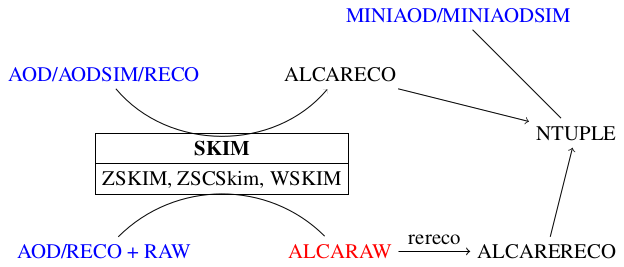

############################################################ # ECALELF (Ecal CALibration with ELectrons Framework) ## study and calibration with Zee and E/p ############################################################
All the code needed to the ECAL studies and calibration with Zee is available in this package.
The code in this package takes the name of ECALELF (Ecal CALibration with ELectrons Framework)
README
The calibration with electrons (single and double electron samples) is performed using the alcareco data format that contains only relevant collections for the ECAL calibration with electrons.
- EcalUncalElectron (ALCARAW): Special data format for rereco purpose
- officially produced starting from CMSSW_8_0_X release
- EcalCalElectron (ALCARECO): Reduced format for RECO data
- can be produced from ALCARAW (default and recommended!)
- this is the stardard format after rereco of data using ECALELF (starting from ALCARAW)
- can be produced starting from RECO or AOD formats
MINIAOD (for monitoring, scales & smearings)

### start from centrally produce ALCARAW (the dataset has name EcalUncal{W,Z}Electron)
- RERECO the ALCARAW applying whatever ECAL tags (ADCtoGeV, IC, LC, Alpha) needed for test or calibration and produce a new file in ALCARECO format (due different collection names, the format is internally called ALCARERECO). The new file has a reduced collection of calibrated rechit of the reco electrons, new SC collections produced with the new calibrated recHits, the old reco electrons with a new SC associated CAVEAT: all the electron variables are still the old RECO one, only the reference to the new SC has been updated. This will not be fixed, since it's a wanted feature that ensures that the selected events are not changed and permit to check effectively the impact of the calibration on the same events.
- calculate new electron energies with the EleNewEnergiesProducer that creates ValueMaps that associate a float (the new energy) to the electrons
- define if the electron pass some selections running the EleSelectionProducers that creates valueMaps of floats with the following meaning: for cut-based selections 1=pass, 0=fail for MVA selections the float is the output of the MVA
- for MC, produce an association map between reco electron and gen electron (data-MC match)
- produce a patElectron collection where the electronID floats and the new energies are imported by the patElectron and accessible by electron.electronID("selectionName") electron.userFloat("energyName") the gen electron identified by the data-MC matching step are embended in the patElectron and accessible by: electron.genLepton().eta() electron.genLepton().energy()
- Filter the events requiring that the electron has passed at least one selection
- dump the event content to a flat tree with one entry for Zee candidate (the variables are array of two elements with one electron per element)
- Run the analysis tools (Z fitter, smearing, etc.)
### Start from RECO or AOD or AODSIM In case the purpose is just to run on a particular dataset without any recalibration step, the 1-2) steps can be replaced by
- Produce directly the ALCARECO, dropping all the unuseful collections and reducing the recHit maps to the one related to the electrons
- nothing
### Start from MINIAOD There is also the possibility to start from MINIAOD. In this case there is no way to produce the ALCARECO, but directly the ntuples.
AOD/AODSIM/RECO or AOD/RECO + RAW
- produce the ALCARAW (EcalUncal{Z,W}Electron is the name of the centrally produced samples) from AOD/RECO+RAW: in this format most of the collections are dropped and only the electrons, the ECAL digis and few other collections like the beamspot, the conversions, the rhoFastJet are kept
- apply a ZSkim or a ZSCSkim or a WSkim selection to reduce the size of the dataset